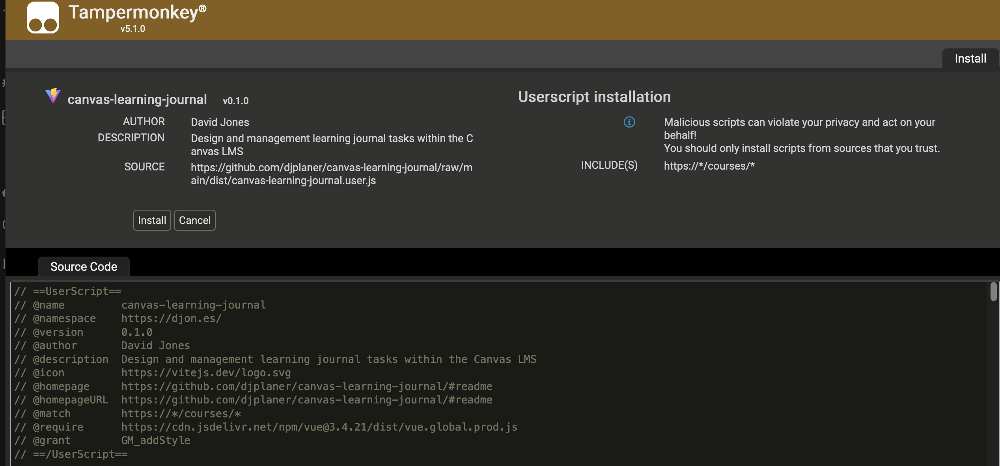

Install CLJ
The Canvas Learning Journal (CLJ) tool is designed as a browser userscript that each user must install.
About userscripts and userscript managers
Userscripts are small Javascript programs you install into your web browser. Once installed userscripts are designed to run when you view specific web pages (e.g. the people page of a Canvas course). A userscript will customise those specific web pages to better suit your purpose.
To help manage userscripts you must first install a userscript manager.
Installing the CLJ tool is a two-step process:
Install Tampermonkey
TamperMonkey is a widely used userscript manager. It can be used on most modern web browsers.
1 - Visit the Tampermonkey home page
You should see instructions for downloading (installing) TamperMonkey for your web browser. e.g. the following image for the Firefox browser

2 - Click on the left-hand Download button
As shown above, you can choose to download the stable (left-hand download button) version of TamperMonkey or the BETA (right-hand download button) version. The stable version is recommended.
You will be taken to your web brower's extension or add-on service.
3 - Follow the instructions to add Tampermonkey to your web browser
Each web browser’s browser extension installation process will be a little different. In general, it will provide you with details of what permissions the browser extension (Tampemonkey in this case) wishes to have and provides you with the option to install.
Install the Canvas Learning Journal user script
With TamperMonkey installed you can now
If all is working you should something like the following image. An image showing TamperMonkey providing you with details of the userscript and asking if you wish to install (or perhaps update) it.
Once installed you are ready to use the Canvas Learning Journal tool.
